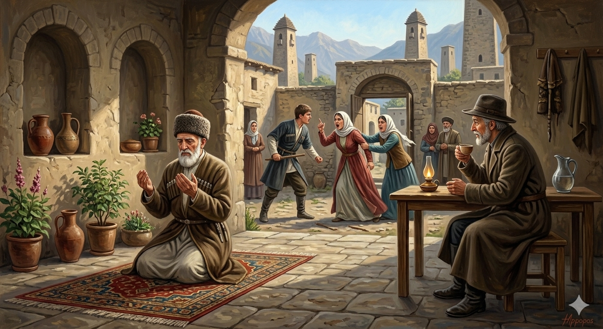

И.А. Дахкильгов. Хьехаме дувцарш - поучительные рассказы-притчи.
И.А. Дахкильгов. Хьехаме дувцарш - поучительные рассказы-притчи. Из ингушского фольклора.

Са несарий дика ба
Цхьа къонах, ший къонгашта истий а кхийла, ламаза паргӀата а ваьнна, сашортта вахаш хиннав. ЦӀагӀа-коа дов-шов ийккхадар аьнна, дӀахьожуш а хиннавац из къонах. ХӀана аьлча? Ший къонгашта духьалавала безам болаш хиннавац воккха саг, хӀаьта исташа цун къонгий са лаьца хиннад, шоаш яхачун тӀера ког дӀа ца боаккхийташ. Воккха саг волча гучавала вена хиннав цун доттагӀа. Хаьттад: - Къонгашта кхийла истий дика ба е во ба ха йиш йолаш тоъал ха дӀаяхай. Миштаб хьа уж? - Сачул дикагӀа несарий хургбац. Геттар дика ба. ХӀана ба хой хьона? Ба, даьсара, цу дӀарча са къонгашка, дӀаве из воккха саг, цар аьлча, со цу къонгаша вувргволаш а хилча, царга из дӀа ца оалаш са несарий а хилча, тӀаккха дика беций уж? - Ба, - аьнна дӀаӀийнав хьоашалгӀа вена хинна доттагӀа.
РУССКИЙ
Мои снохи хорошие
Некий мужчина женил своих сыновей, успокоился так, что начал совершать намаз. Между снохами и сыновьями случались потасовки, пересуды, но старик во все их тяжкие не вникал. Знай, молился себе. Как-то пришел давнишний друг проведать старика. Он спросил: - Прошло уже достаточно времени, чтобы узнать, насколько хороши или плохи твои снохи, что ты можешь о них сказать? - Более хороших снох я не могу себе представить, - отвечал старик, - и знаешь, почему? Если бы мои снохи сказали своим сыновьям "убейте этого старика", то есть меня, то они бы меня запросто убили. Но снохи этого не приказывают, и я, как ты сам видишь, еще жив.
ENGLISH
My daughters-in-law are good
A man married off his sons, found peace of mind and began to pray. There were squabbles and gossip between the sons and their wives, but the old man paid no heed to their troubles. He simply continued with his prayers. One day, an old friend came to visit him. He asked, 'Enough time has passed now to know whether your daughters-in-law are good or bad. What can you say about them?' 'I cannot imagine better daughters-in-law,' replied the old man. 'Do you know why? If they had told their sons to kill me, they would have done so without hesitation. But they do not order such a thing, and as you can see, I am still alive.'
НОХЧИЙН
Сан несарий дика бу
Цхьа къонах, шен кӀенташна зударий а балийна, ламазан паргӀат а ваьлла, синтеме вехаш хилла. ЦӀахь-кевнехь дов-шов иккхина дар аьлла, дӀахьожуш а хилла вац иза къонах. ХӀунда аьлча? Шен кӀенташна дуьхьалвала безам болуш хилла вац воккха стаг, хӀета зударша цуьнан кӀентийн са лаьцна хилла, шаьш бохучун тӀера ког дӀа ца боккхуьйтуш. Воккха стаг волче гучувала веан хилла цуьнан доттагӀ. Хаьттина: - КӀенташна балийна зударий дика бу йа вон бу хаа йиш йолуш тоъал хан дӀайахна. Муха бу хьан уьш? - Сайчул диках несарий хир бац. Гуттар дика бу. ХӀунда бу хаьий хьуна? Бу, десара, цу дӀогерчу сан кӀенташка, дӀаве и воккха стаг, цара аьлча, со цу кӀенташа вуьйр волуш а хилча, цаьрга иза дӀа ца олуш сан несарий а хилча, тӀаккха дика бац уьш? - Бу, - аьлла дӀаӀийна хьошалла веан хилла доттагӀ.
ПОГОВОРКИ
Ахча хьалаха хала дац, ахча бе къовла хала да. - Добыть деньги не сложно, куда сложнее их удержать. Даьла къайле сага ха йиш яц. - Никому не дано проникнуть в тайны божьи. Ца ховчун кхача ховчо биаьб. - Ужин неумехи съедает умелец. Декъанца моастагӀал леладе мегаргдац. - Нельзя враждовать с трупом. Жерочох йоахараш ийшадац. - О вдове сплетен всегда с избытком. Жерочун воӀ лерах вовзаргва. - Сына вдовы узнают по болтливости. Кицо дош дохаду, кицо дош тоаду. - "Кица" (пословица…) может разрушить сказанное, "кица" может закрепить сказанное. Кхаанга Ӏомадаь бежан тӀехьара дӀадалац. - Приученная к лакомствам скотина не отстает от хозяина. Кхийрар ваьгавац. - Осторожный не обжегся. Кхыча жӀале багара тӀехк яьккха деннача жӀале ший багара тӀехк ежай. - Собака, бросившаяся отнимать кость у другой (собаки), обронила свою. Къанахчоа - топ-тур-шалта; кхалчоа - тӀор-маха-тай. - Мужчине - ружье, сабля, кинжал; женщине - наперсток, игла, нитки. Мекхех хьекхарах думех пайда бац, из буаш беце. - Нет толку, что курдюком мажешь по усам, а не ешь его. Нана йийлхача, бераш дийлхад, бераш дийлхача, да. - Всплакнула жена, заплакали дети, а за ними заревел и отец. Наьха модж лацале, хьа хьайяр яьша. - Прежде чем кого-то схватить за бороду, побрейся. Низ хилар дика да, корта болаш хьо хуле. - Сила хороша, если у тебя есть голова. Оасар овланца мара дӀадоаккхалац. - От сорняка избавишься, только вырвав его с корнем. Сесаг а хила еза кӀезига-дукха зудал доаллаш. - И жена должна быть слегка кокетливою. Топ-тапчо бегаш бац. - Ружье, пистолет (огнестрельное оружие) шуток не знают. "Хий дезе, виза ва; хий ца дезе, бага марха да", - хьаьшах аьннад цӀаьрматача саго. - "Попросит (гость) воды напиться - значит сыт, не попросит - значит уразу держит", - сказал жадный хозяин. ЭгӀазваха эзди саг воасталургва, лай саг киса бий а баь, леларгва. - Благородный, если он и рассердится, отходчив; неблагородный же постоянно держит в кармане сжатый кулак.